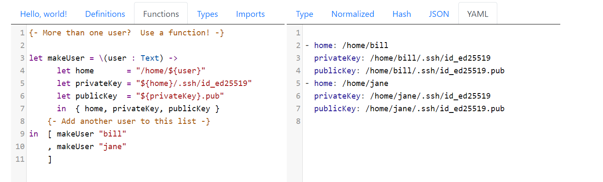
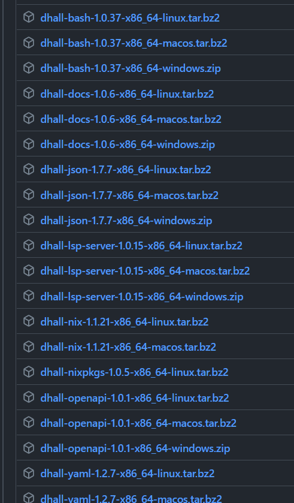
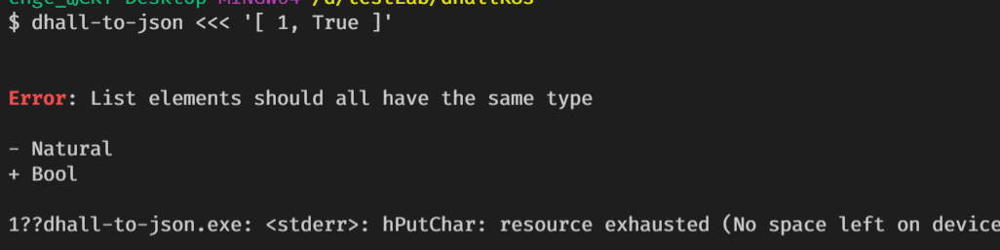
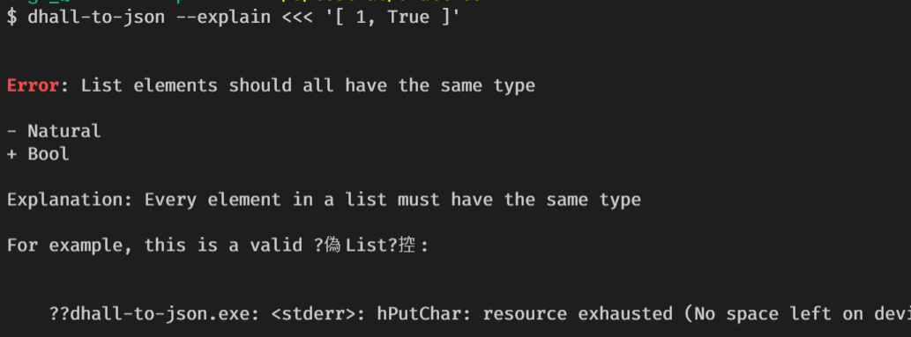

Dhall is a programmable configuration language that you can think of as: JSON + functions + types + imports，這樣應該就解釋了什麼是 Dhall 了吧
貼個範例聞香一下

左邊是 dhall 的語法，右邊是輸出結果，看起來還簡單明瞭的，接下來就是基本語言的筆記了，至於如何安裝就請按照這文件安裝
學習筆記
-
Dhall 要轉換成不同格式，會透過不同的執行程式完成，例如 Dhall -> JSON 就要用 dhall-to-json，要轉換成 YAML 就會用 dhall-to-yaml，這篇筆記看到 dhall-to-json 輸出結果就會是 JSON 格式

-
Dhall 是一個強型別語言，compiler 會檢查型別是否正確，會將失敗的理由吐回給你，也可以使用
--explain的 flag 來取得更多的訊息

-
支援 type annotations，類似 TypeScript 指定型別的方式
1
dhall-to-json <<< '{ foo = 1, bar = True } : { foo : Natural, bar : Bool }'
Type annotations 也可以用指定檔案的方式
1
dhall-to-json <<< '{ foo = 1, bar = True } : ./schema.dhall'
-
變數宣告: 使用
let來進行變數宣告，如上面範例1
let home = '/home/${user}'
-
dhall 是 whitespace-insensitive，不像 yaml 一個 space 錯位就壞掉了，因為這樣的特性會有這樣的寫法出現
1
2
3
4
5let x = 1 let y = 2 in [x, y]
// 等同於
let x = 1
let y = 2
in [x, y] -
一個比較完整的使用範例 (檔案:
employee.dhall)1
2
3
4
5
6
7let job = { department = "Data Platform", title = "Software Engineer" }
let john = { age = 23, name = "John Doe", position = job }
let alice = { age = 24, name = "Alice Smith", position = job }
in [ john, alice ]輸出結果 (執行命令:
dhall-to-json --file ./employee.dhall)1
2
3
4
5
6
7
8
9
10
11
12
13
14
15
16
17
18[
{
"age": 23,
"name": "John Doe",
"position": {
"department": "Data Platform",
"title": "Software Engineer"
}
},
{
"age": 24,
"name": "Alice Smith",
"position": {
"department": "Data Platform",
"title": "Software Engineer"
}
}
] -
可以寫 function，宣告方式:
\(inputName : inputType) -> output，範例1
2
3
4
5let twice = \(x : Natural) -> [x, x]
in twice 2
// 輸出結果
[2, 2] -
record 可以透過
/\來合併1
2
3
4
5
6
7dhall-to-json <<< '{ foo = 1 } /\ { bar = 2}'
// 輸出結果
{
"bar": 2,
"foo": 1,
}比較接近現實生活的範例
1
2
3
4
5
6
7
8
9
10
11
12
13let smallServer = { cpus = 1, gigabytesOfRAM = 1, terabytesOfDisk = 1 }
let mediumServer = { cpus = 8, gigabytesOfRAM = 16, terabytesOfDisk = 4 }
let largeServer = { cpus = 64, gigabytesOfRAM = 256, terabytesOfDisk = 16 }
in [ smallServer /\ { hostName = "eu-west.example.com" }
, largeServer /\ { hostName = "us-east.example.com" }
, largeServer /\ { hostName = "ap-northeast.example.com" }
, mediumServer /\ { hostName = "us-west.example.com" }
, smallServer /\ { hostName = "sa-east.example.com" }
, largeServer /\ { hostName = "ca-central.example.com" }
] -
Operators
++連接兩個字串#連接兩個 List
-
Optional，有時候會遇到缺欄位的資料，這時候就要使用Optional的表示法1
2
3
4[
{ x = 1, y = None Natural } ,
{ x = 2, y = Some 3 }
]- Some -> 表示這個欄位有可能有 Null 值出現
- None
-> 視為 Null 空值 - 指令多下
--preserve-null參數，會將空值輸出 (null)
-
使用
Unions的方式可以讓清單內有不同型別得資料存在1
2
3
4
5
6
7
8
9
10
11
12
13
14
15
16
17
18
19
20
21
22
23-- ./package.dhall
let Package =
< Local : { relativePath : Text }
| GitHub : { repository : Text, revision : Text }
| Hackage : { package : Text, version : Text }
>
in [ Package.GitHub
{ repository =
"https://github.com/Gabriel439/Haskell-Turtle-Library.git"
, revision = "ae5edf227b515b34c1cb6c89d9c58ea0eece12d5"
}
, Package.Local { relativePath = "~/proj/optparse-applicative" }
, Package.Local { relativePath = "~/proj/discrimination" }
, Package.Hackage { package = "lens", version = "4.15.4" }
, Package.GitHub
{ repository = "https://github.com/haskell/text.git"
, revision = "ccbfabedea1cf5b38ff19f37549feaf01225e537"
}
, Package.Local { relativePath = "~/proj/servant-swagger" }
, Package.Hackage { package = "aeson", version = "1.2.3.0" }
] -
使用
mapKey和mapValue就可以做出動態資料，而指令參數--noMaps就會單純輸出結果不轉換1
2
3
4[ { mapKey = "daniel", mapValue = { age = 17 } }
, { mapKey = "rebecca", mapValue = { age = 17 } }
, { mapKey = "aiden", mapValue = { age = 16 } }
] -
如果要輸出 yaml ，就使用
dhall-to-yaml來跑dhall檔案